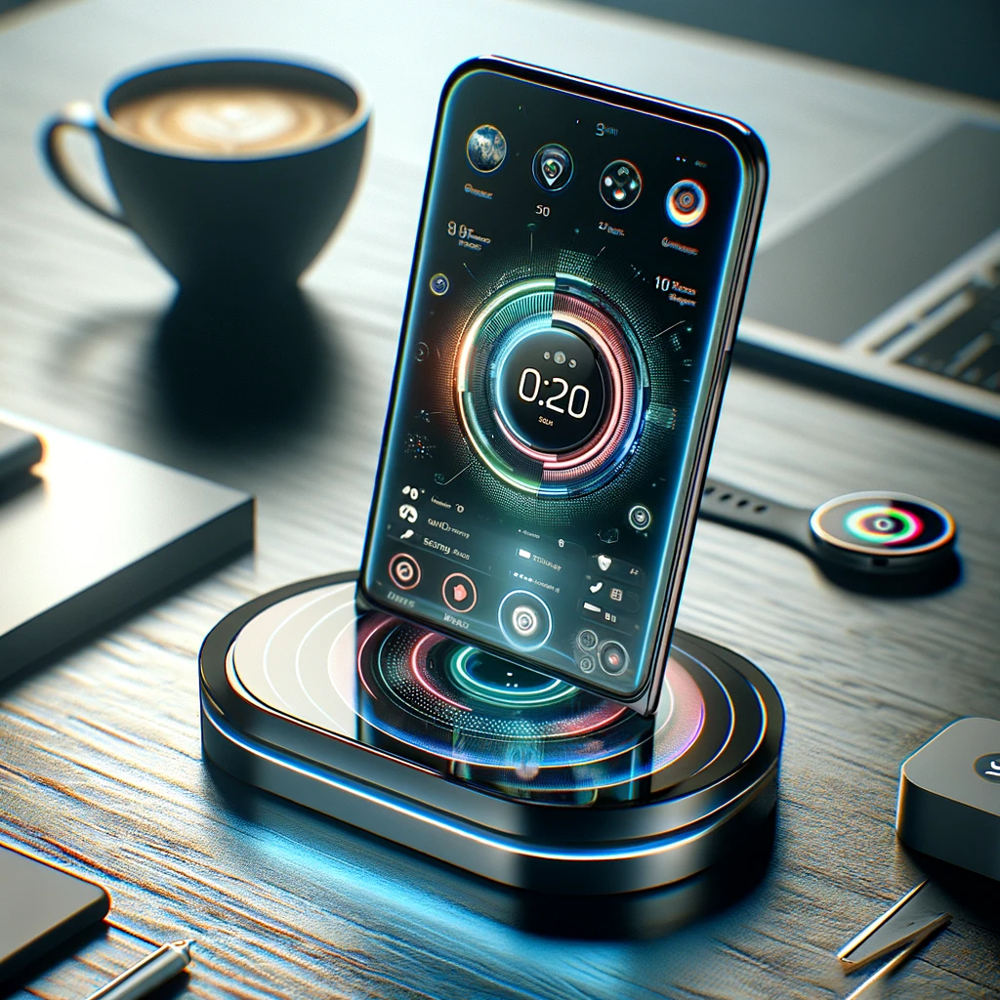

The Next Generation of Smart Devices
Welcome to the future of smart devices, where innovation meets practicality...
In a world where technology leaps bounds faster than a caffeinated kangaroo, the latest marvel to hit the market has been nothing short of a revelation. Meet the "FuturoGizmo Pro Max Elite," a device so advanced, it makes your current smartphone look like a relic from the Stone Age. The Design: Sleek, Chic, and Oh-So Unique First off, let's talk design. The FuturoGizmo Pro Max Elite boasts a sleekness that makes supermodels envious. Its display is so vibrant, rainbows appear dull in comparison. With a screen-to-body ratio that's essentially 110%, physicists are scratching their heads trying to figure out where the device begins and reality ends. Features: Like Magic, But Real Now, onto the features. This device doesn't just connect to Wi-Fi; it connects to Wi-Why-Isn't-This-Everywhere. With the ability to telepathically predict your next Google search, it's like having a mind reader in your pocket. And battery life? Let's just say you'll sooner find the end of a rainbow than see this device's battery indicator dip below 100%. The Camera: Seeing is Believing (Or Is It?) The camera on the FuturoGizmo Pro Max Elite has been rumored to capture the soul of its subjects – figuratively, of course (or so we've been assured). With resolution so sharp, you can see the future in every snapshot, it's no wonder that users are flocking to get their hands on it. Integration: Your New Best Friend Integration with other devices is so seamless, it's rumored that the FuturoGizmo can make a smoothie with your blender, walk your dog, and even file your taxes – all while managing your social media presence with the charisma of a celebrity influencer. The Verdict: Shut Up and Take My Money In conclusion, the FuturoGizmo Pro Max Elite isn't just a device; it's a lifestyle. A statement. A testament to the human spirit's unyielding quest for progress. It's the answer to the question, "What will they think of next?" And the answer is: They've already thought of it, and it's spectacular.